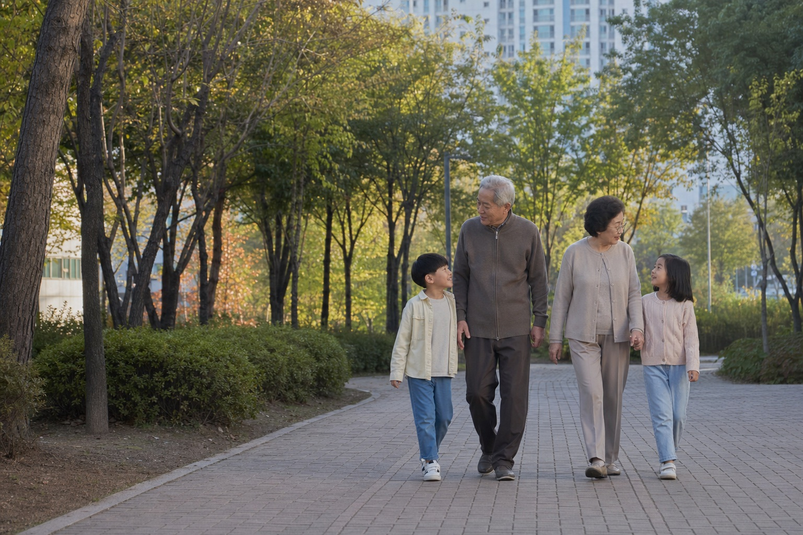
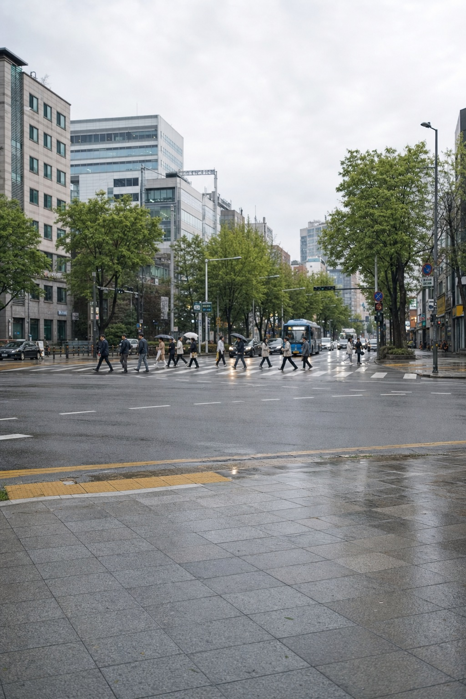

FOR PEOPLE
사용자의 문제
“검증된 센터를
찾기 어렵습니다.”
센터의 등록 자격, 전문 분야, 프로그램, 운영시간과 위치를 한곳에서 살펴볼 수 있도록 정리해 선택의 불확실성을 줄입니다.

WHY WE EXIST
다시 편하게 걷고, 출근하고, 가족과 시간을 보내고, 좋아하던 취미를 이어가는 것. DAIL은 멈춰 있던 사람이 자신에게 맞는 움직임을 다시 시작해, 나다운 일상으로 나아가는 과정을 연결합니다.
OUR NAME
이름에는 서비스를 찾는 순간보다 그 이후의 삶을 먼저 바라보겠다는 뜻이 담겨 있습니다. 다시 편하게 걷고, 출근하고, 가족과 시간을 보내며 나다운 하루를 이어가는 것. DAIL은 운동 그 자체보다, 운동을 통해 되찾고 싶은 각자의 일상을 향합니다.
OUR ROLE
사용자는 믿을 수 있는 선택지를 찾고, 센터는 자신의 전문성을 정확히 알리고 싶습니다. DAIL은 두 요구가 만나는 지점에서 확인 가능한 정보를 정리하고 예약으로 이어지는 흐름을 만듭니다.
사용자의 문제
센터의 등록 자격, 전문 분야, 프로그램, 운영시간과 위치를 한곳에서 살펴볼 수 있도록 정리해 선택의 불확실성을 줄입니다.
센터의 문제
센터가 가진 강점과 운영 정보를 분명하게 보여주고, 이용자의 탐색이 상담과 예약으로 자연스럽게 이어지도록 돕습니다.
센터의 자격, 전문 분야, 프로그램과 운영 정보를 투명하게 정리하고, 사용자가 자신에게 맞는 센터를 발견해 상담과 예약까지 이어갈 수 있도록 연결합니다.
DAIL은 앞으로 움직임·건강·생활 영역의 신뢰할 수 있는 브랜드와 기관에도 연결의 문을 열어둡니다. 모든 협업은 사용자의 선택을 흐리는 광고가 아니라, 실제 비교에 도움이 되는 정보와 더 나은 이용 경험을 만드는 방향을 우선합니다.
모두의 일상

“누군가에게는 출근이고,
누군가에게는 가족과의 산책이며,
또 누군가에게는 다시 시작하는 취미입니다.”
DAIL은 통증이나 움직임에 대한 걱정보다, 그 너머에 있는 각자의 생활을 바라봅니다.
THE DAIL JOURNEY
내 주변의 전문 운동센터를 지도에서 찾습니다.
프로그램과 운영 정보를 한 화면에서 살펴봅니다.
나에게 맞는 전문가와 더 나은 움직임을 시작합니다.
내가 소중하게 여기는 일상을 다시 이어갑니다.
발견 → 움직임 → 일상
OUR SYMBOL
DAIL의 D 안을 가로지르는 청록의 곡선은 멈춰 있던 하루가 다시 움직이고, 나다운 일상으로 이어지는 흐름을 담았습니다. 단단한 신뢰 위에서 더 나은 변화를 연결하겠다는 DAIL의 약속입니다.
DAIL다시, 일상으로
BRAND COLORS
건강한 움직임과 안정감, 그리고 전문적인 신뢰를 함께 표현합니다.
전문성 있는 정보와 분명한 등록 기준을 상징합니다.
OUR STANDARD
물리치료사 면허 또는 체육학 학위 서류를 확인한 센터만 등록 신청을 받습니다.
프로그램, 전문 분야, 운영시간과 위치를 한눈에 비교할 수 있게 정리합니다.
과장된 약속보다 확인 가능한 정보로 나에게 맞는 선택을 돕습니다.
DAIL — 다시, 일상으로